The Basic Variable-Endpoint Control Problem is the
same as the Basic Fixed-Endpoint Control Problem except the target
set is now of the form
 , where
, where
 is a
is a
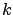
-dimensional surface in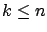
. As in Section 1.2.24.1 we define such a surface via equality constraints:
where
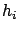
,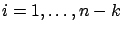
are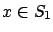
is a regular point. As two extreme special cases, for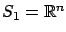
(which gives a free-time, free-endpoint problem) while for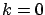
the surface
Maximum Principle for the
Basic Variable-Endpoint Control Problem
Let
 be an optimal control
and let
be an optimal control
and let
 be the
corresponding optimal state trajectory. Then there
exist a function
be the
corresponding optimal state trajectory. Then there
exist a function
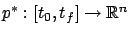
and a constant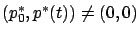
for all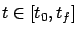
and having the following properties:
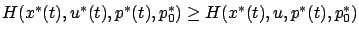
for all and all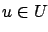
.
The additional necessary condition (4.3) is called the transversality condition (we encountered its loose analog in Example 2.4 and Exercise 2.6 in Section 2.3.5). We know from Section 1.2.2 that the tangent space can be characterized as
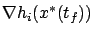
, . Note that when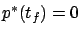
(because the tangent space is the entire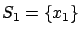
, its tangent space is 0 and (4.3) is true for all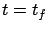
. This gives the correct total number of boundary conditions to specify a solution of the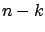
degrees of freedom for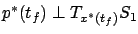
. We see that the freer the state, the less free the costate: each additional degree of freedom forThe maximum principle was developed by the Pontryagin school in the Soviet Union in the late 1950s. It was presented to the wider research community at the first IFAC World Congress in Moscow in 1960 and in the celebrated book [PBGM62]. It is worth reflecting that the developments we have covered so far in this book--starting from the Euler-Lagrange equation, continuing to the Hamiltonian formulation, and culminating in the maximum principle--span more than 200 years. The progress made during this time period is quite remarkable, yet the origins of the maximum principle are clearly traceable to the early work in calculus of variations.